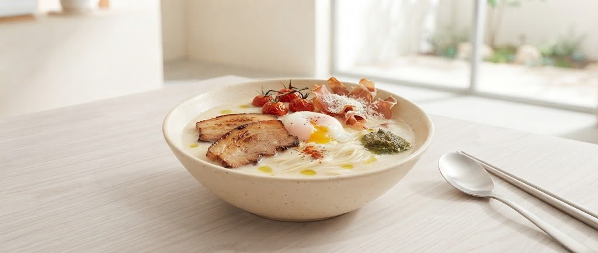
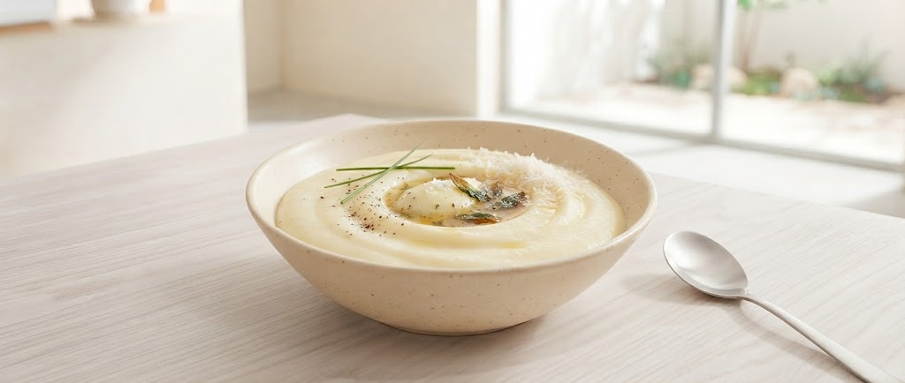
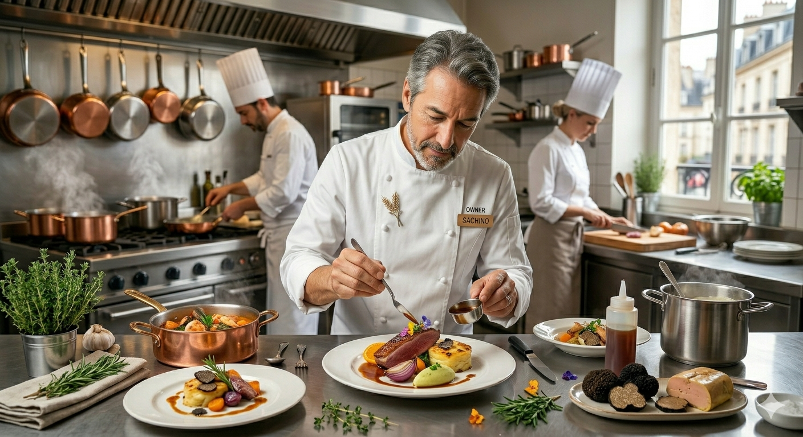

NORMAが愛される3つの確信

イタリアンBARとしての顔を持つNORMAだからこそ辿り着いた、素材の旨味を最大限に引き出す抽出法。濃厚でありながら、後味は驚くほど洗練されたとんこつスープを実現しました。
「他では味わえない、深みがある」— 常連客の声

名物のポテトクリームや、天使のカルボナーラ。昼はカフェ、夜はバル。とんこつラーメンを軸に、多彩な創作料理が広がる「NORMAワールド」が観光客を虜にします。
創業者の栗原氏は、かつて金融系サラリーマンとして全国を飛び回っていました。その経験から培われたのは、「本当に良いもの」を見極める客観性と、熱い地元愛。
コロナ禍の苦境も、クラウドファンディングや地域との連携、そして「ストリートフードのクオリティ」への自信で突破。その情熱が、この一杯に注がれています。

OWNER & FOUNDER
栗原氏
「こんなサービスがあったら良いな」をカタチに。
NORMAがこれからお届けする新たなワクワクの予告です。
大人気のポテトクリームに加え、焼きたてワッフルやモチモチの本格クレープ、特選ドリンクのテイクアウト展開を準備中!温泉街の散策のお供にぴったりの食べ歩きメニューです。
ワインやクラフトビールを楽しんだ後にぴったりの「ハーフサイズとんこつ」。バルならではのおつまみとラーメンの特別ペアリング体験を企画しています。
よくあるご質問
〒999-0000 山形県上山市新湯1-13
(かみのやま温泉駅から徒歩8-9分 / 駐車場完備)
080-3146-8525
定休日:火曜日